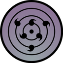

Computer Science student at the University of Maryland, College Park, graduating in December 2025. I build compilers, games, and systems software, and I'm drawn to the corners of CS where math, security, and finance meet. My interests cover programming language theory, functional programming, and low-level systems on one side, and cybersecurity, applied cryptography, and crypto-finance on the other. Coursework so far includes compilers, operating systems, computer security, computer networks, algorithms, and discrete math. Browse my projects below — run them, read the source, or download them.
// select a file to view
A complete Wordle clone written in pure Haskell using only the
base and time libraries — no external packages, no Stack, no
Cabal project. The whole game lives in a single file that
compiles directly with ghc.
Each request reads a 5-letter guess from stdin, checks it
against the daily target word, updates the saved game state
on disk, and prints a colorized result line. The target word
rotates daily based on the current date, so the same word
stays in play for everyone all day, just like the real
Wordle. Game state (target plus guesses so far) is persisted
to game.txt between requests, so the portfolio
terminal can play a full six-guess game across many separate
HTTP calls.
The interesting part is the two-pass guess scoring algorithm.
A naive implementation gets letter duplicates wrong: if the
target is ALLEY and you guess LULLS,
only one of the two L's in your guess should turn yellow.
The two-pass algorithm marks exact matches first, then
processes the remaining letters against a multiset of
unmatched target letters:
checkGuess :: String -> String -> [(Char, Mark)]
checkGuess target guess = zip guess marks
where
-- Pass 1: mark exact position matches
exactMatches = zipWith
(\t g -> if t == g then Correct else NotInWord)
target guess
-- Letters in the target that weren't already exact-matched
remaining = [ t | (t, m) <- zip target exactMatches
, m /= Correct ]
-- Pass 2: for each non-Correct letter, check the remaining pool
marks = snd $ foldl step (remaining, []) (zip guess exactMatches)
step (pool, acc) (g, Correct) = (pool, acc ++ [Correct])
step (pool, acc) (g, _)
| g `elem` pool = (delete g pool, acc ++ [WrongPos])
| otherwise = (pool, acc ++ [NotInWord])
Demonstrates: algebraic data types, pattern matching, pure
functions, IO separation, and Haskell's Data.Time
for the daily-word rotation.
// select a file to view
A turn-based roguelike written entirely in Haskell with no external libraries beyond base and time. Five procedurally generated floors of increasing difficulty, each with monsters, gold, health potions, and a stairway down to the next level. Reach the stairs on Floor 5 to escape.
Every floor is generated deterministically from a seed plus
the floor number using a hand-rolled hash function, so the
same dungeon can be reproduced exactly without pulling in the
random package. Walls, gold, and potions are
placed by hashing each (x, y, floor) triple and checking
modular conditions, so the layout looks random but stays
consistent across reloads.
Combat is turn-based: walking into a monster attacks it, and the monster strikes back if it survives. Every three kills the player levels up — attack goes up, max HP goes up, and they heal. Monster types and stats scale per floor, so by the time you face the dragons and demons on Floor 5 you need to have leveled up earlier.
The whole game state — seed, position, HP, ATK, gold, level, kills, the current map, and every living monster — is serialized to a single text file between requests, which lets the portfolio terminal play a multi-turn game across stateless HTTP calls.
-- Move the player. If a monster blocks the way, fight it.
movePlayer :: Dir -> Game -> (Game, String)
movePlayer dir game =
let (dx, dy) = dirDelta dir
nx = gPX game + dx
ny = gPY game + dy
in case monsterAt (gMonsters game) nx ny of
Just m -> combat game m
Nothing -> enterCell game nx ny
Demonstrates: state encoding/decoding, pure procedural generation, algebraic data types for tiles and directions, and writing a non-trivial program in Haskell with zero third-party dependencies.
↗ githubResonance is a composite sub-pane oscillator for TradingView, written in PineScript v5. It aggregates multiple independent technical signals — each drawn from a different dimension of market behavior — into a single normalized 0–100 score called the Resonance Score.
The signals draw from fundamentally different dimensions of market behavior — momentum, trend structure, volume, volatility, and divergence. Each is independently normalized against the asset's own history — then combined via a weighted composite with a confluence multiplier.
A score near 0–20 indicates simultaneous extreme undervaluation across multiple dimensions. A score near 80–100 indicates simultaneous extreme overvaluation. The composite is meaningfully strongest at the extremes.
The Resonance Score is not just a weighted average. It includes a confluence multiplier: when 3 or more signals simultaneously reach extreme territory, the composite is pushed further toward that extreme — amplifying the signal when agreement is highest.
At 5+ signals in agreement, the boost is 32% toward the extreme. This is why a Resonance Score of 12 is meaningfully different from a score of 18 — both are in the buy zone, but a score of 12 requires most indicators to simultaneously be at historic lows, which is far rarer.
This mechanism is also why the indicator rarely gives false signals at extreme levels. A score of 85 requires broad consensus across fundamentally different signal types, not just one overextended oscillator.
Resonance draws from six primary structural dimensions: price momentum, trend structure (MA alignment and deviation from long-term mean), volume pressure, directional momentum, and divergence. Each signal is independently normalized against the asset's own history before entering the composite.
The normalization method differs per signal type — oscillators use raw values, histogram-based signals are normalized against their historical extremes, and structure signals use step or deviation scaling. The composite includes a confluence multiplier that amplifies readings when multiple signals simultaneously agree at extremes.
The specific weights, combination logic, and all implementation details are proprietary and kept server-side. Source code is not publicly distributed.
Every component normalizes against the asset's own history — not a fixed scale. RSI deviations are measured relative to that asset's RSI extremes. MA Deviation is normalized against the furthest the asset has ever stretched from its 200 MA.
This means the same thresholds — buy below 20, sell above 80 — apply to SPY, BTC, GLD, or any liquid asset. The indicator self-calibrates. There's no manual tuning required per asset.
Timeframe recommendation: Weekly (1W) for macro positioning, daily for orientation. The weekly view filters short-term noise and focuses on structural cycle extremes. The edge lives on the weekly.
Resonance answers one question: where are you in the cycle? Not when to trade — where you are. Combined with price context and your own analysis, that question has meaningful value.
// select a file to view
A complete compiler pipeline for MiniLang, a small ML-style functional language with first-class functions, lexical scoping, and Hindley-Milner type inference. The compiler walks the classic four-phase pipeline: lexer produces tokens, parser builds an AST, the type checker infers and verifies every expression's type before any code runs, and the evaluator interprets the typed AST.
Built from scratch in Haskell using Parsec for parsing.
Supports let bindings, if/then/else,
anonymous functions (\x -> ...), function
application, integer arithmetic, and recursive definitions.
Type errors are caught and reported before evaluation, so a
program like 1 + true never gets the chance to
run.
let fact = \n -> if n == 0 then 1
else n * fact (n - 1)
in fact 10
-- => 3628800 : Int
Originally built for CMSC 430 (Design of Programming Languages) at UMD. Demonstrates compiler construction, parser combinators, type inference algorithms, and AST interpretation in a functional language.
↗ github
// select a file to view
Iniquity+ is a Scheme-like programming language implemented
in Racket. It supports first-class functions, lexical
closures, variadic functions via case-lambda,
rest arguments, apply, and a richer type system
than the original Iniquity dialect from Marc-André Langlois's
compilers course.
Built incrementally over a semester as part of CMSC 430 at UMD, starting from a tiny arithmetic-only language and growing through let bindings, conditionals, functions, closures, vectors, and pattern-matched lambdas. The interpreter is written in Racket and demonstrates how traditional functional language features can be implemented from the ground up.
(define (fact n)
(if (= n 0)
1
(* n (fact (- n 1)))))
(fact 10)
;; => 3628800
Source for this one is private — try the live interpreter above.
// select a file to view
WalletTracker looks up any blockchain wallet across BTC, ETH, BASE, BNB, SOL, and ADA. Paste an address and get full transaction history from genesis, FIFO and weighted-average cost-basis accounting, realized and unrealized P&L, break-even prices, and capital flow totals.
The backend fetches on-chain data and prices each transaction against CoinGecko historical data server-side — API keys never leave the server. All results are stateless and reset on every page load.
Unique features: dual cost-basis (FIFO + WAVG toggle), per-lot visualization, "house money" metric, full inception scan, multi-wallet aggregation (in full dashboard), CSV export.
Stack: Vanilla JS · Node.js/Express · Blockstream · Etherscan · Helius · Blockfrost · CoinGecko
↗ github ↗ full dashboard